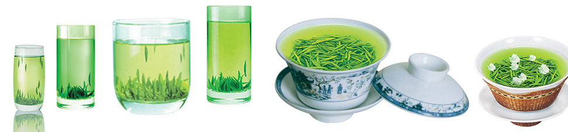

公告板
Bulletin board西湖龙井
West Lake Longjing Tea西湖龙井产于浙江省杭州市西湖龙井村周围群山。具有1200多年历史。西湖龙井，因产于中国杭州西湖的龙井茶区而得名。欲把西湖比西子，从来佳茗似佳人。龙井既是地名，又是泉名和茶名。茶有“四绝”：色绿、香郁、味甘、形美。特级西湖龙井茶扁平光滑挺直，色泽嫩绿光润，香气鲜嫩清高，滋味鲜爽甘醇，叶底细嫩呈朵。清明节前采制的龙井茶简称明前龙井，美称女儿红，“院外风荷西子笑，明前龙井女儿红。”这优美的句子如诗如画，堪称西湖龙井茶的绝妙写真。集名山、名寺、名湖、名泉和名茶于一体，泡一杯龙井茶，喝出的却是世所罕见的独特而骄人的龙井茶文化
称号展示
Title Display- 11.20，西湖龙井获优秀茶叶称号
- 3.10，西湖龙井获畅销茶叶称号
- 5.1，公展茶庄获得优秀茶叶经销商称号
- 1.8，西湖龙井获畅销茶叶称号
- 2.10，西湖龙井获优秀茶叶称号
产品演示

2015013757 电子153 徐立平